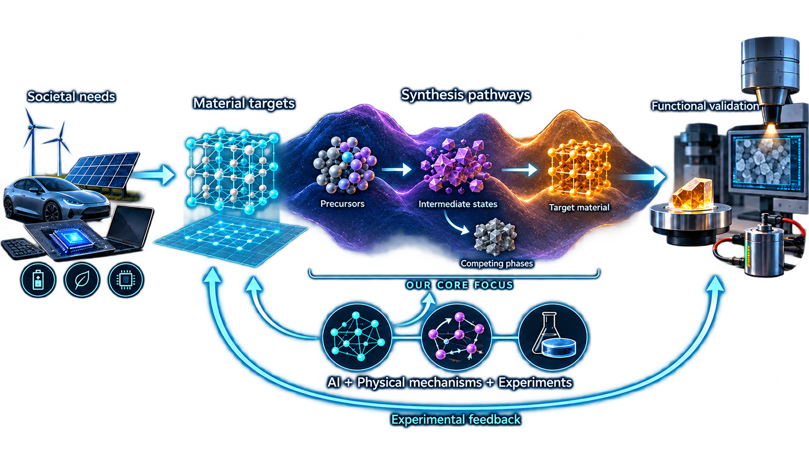
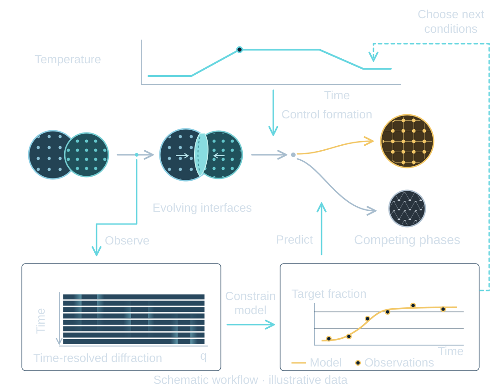

{kind=link}
LEARN FROM EVIDENCE
Data science
Extract knowledge from literature, computation and experiments. Identify material states, learn synthesis relationships and generate predictions that can be tested.
We study how energy landscapes and mass transport govern structural and chemical transformations across scales. By integrating data science, computational modeling and in situ characterization, we aim to understand and predict nonequilibrium synthesis pathways and guide the precise synthesis of target materials.

Conceptual illustration of our research vision. AI, physical mechanisms and experimental feedback connect material targets with synthesis pathways and functional validation.
THE BIG PICTURE
THE MATERIALS DEVELOPMENT PARADIGM
Precursors, reaction pathways and conditions
Can we make it reliably?Phases, defects, interfaces and microstructure
Transport, stability and response to fields
Function, efficiency and reliability

Thermodynamics and kinetics explain material formation. Process control uses this understanding to guide synthesis.
OUR APPROACH
Three complementary approaches address thermodynamics, kinetics and process control together, connecting an understanding of material formation with synthesis decisions.
LEARN FROM EVIDENCE
Extract knowledge from literature, computation and experiments. Identify material states, learn synthesis relationships and generate predictions that can be tested.
EXPLAIN AND PREDICT
Build thermodynamic and kinetic models to explain reaction driving forces, mass transport and structural evolution, and predict how materials form under different conditions.
OBSERVE AND TEST
Observe changes during synthesis, distinguish competing mechanisms and test predictions. Verify that the target material forms and exhibits the intended properties.
A CONNECTED RESEARCH CYCLE
Connect literature knowledge, computed data and time-resolved measurements to identify material states and test assumptions.
Predict competing pathways and phase evolution, and identify synthesis conditions for experimental evaluation.
Compare predictions with measurements, distinguish competing explanations and use the results to update models and guide the next experiment.
New evidence updates models and synthesis decisions.

Predictive accuracy under new conditions, reproducible target formation and experimentally verified function. Energy storage and conversion provide application contexts for defining targets and testing performance.
We are developing tools that connect literature evidence, multimodal analysis and study planning across the research cycle.
{kind=link}